静止画をつなげた確認用のプレビューです。本制作では動画にし、文字は正本から載せ直します。
| C01 4秒 | 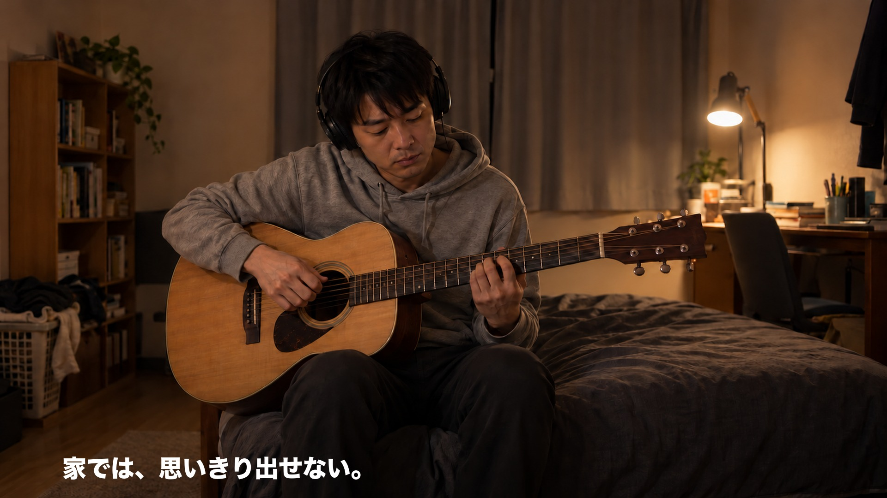 | 良さ：本格防音室（悩みへの共感） 場面：夜の自宅で、ヘッドホンをつけて小さく練習する大人。ため息 テロップ：家では、思いきり出せない。 ※仮のイメージ |
| C02 4秒 | 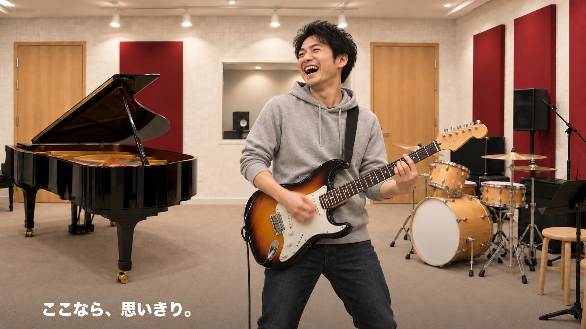 | 良さ：思いきり鳴らせる 場面：同じ大人が防音室で、アンプの前で思いきり弾いて笑う テロップ：ここなら、思いきり。 |
| C03 4秒 | 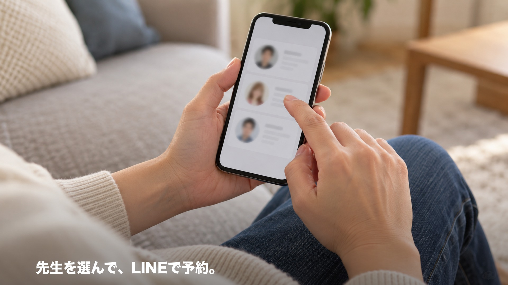 | 良さ：講師を選べる・LINEで直接予約 場面：スマホで講師のプロフィールを見比べる指先 テロップ：先生を選んで、LINEで予約。 ※仮のイメージ |
| C04 3秒 | 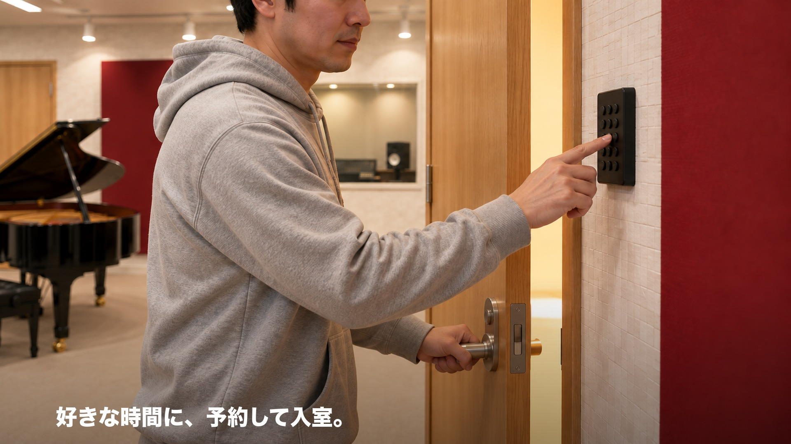 | 良さ：無人・暗証番号・好きな時間 場面：テンキーを押して、木の防音ドアが開く テロップ：好きな時間に、予約して入室。 |
| C05 4秒 | 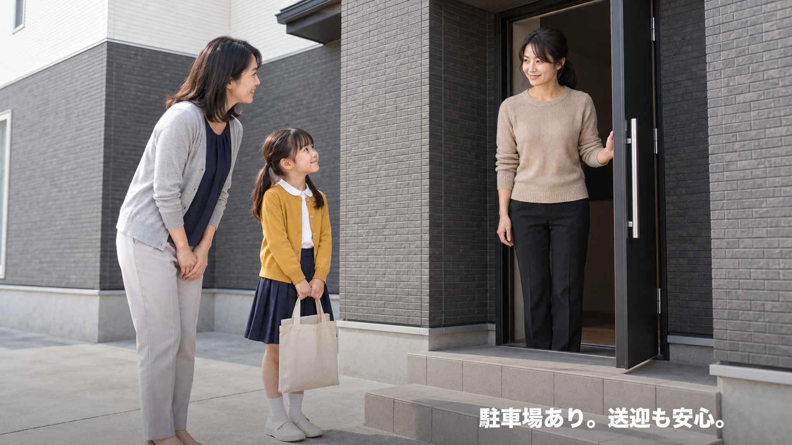 | 良さ：家のような温かさ・保護者が来やすい 場面：教室の玄関で、講師がドアを開けて親子を笑顔で迎える テロップ：駐車場あり。送迎も安心。 |
| C06 4秒 | 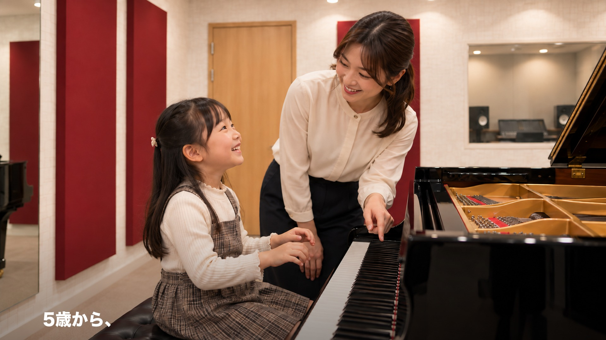 | 良さ：5歳から 場面：小学生がピアノを弾けて振り返り、講師が笑う テロップ：5歳から、 |
| C07 3秒 | 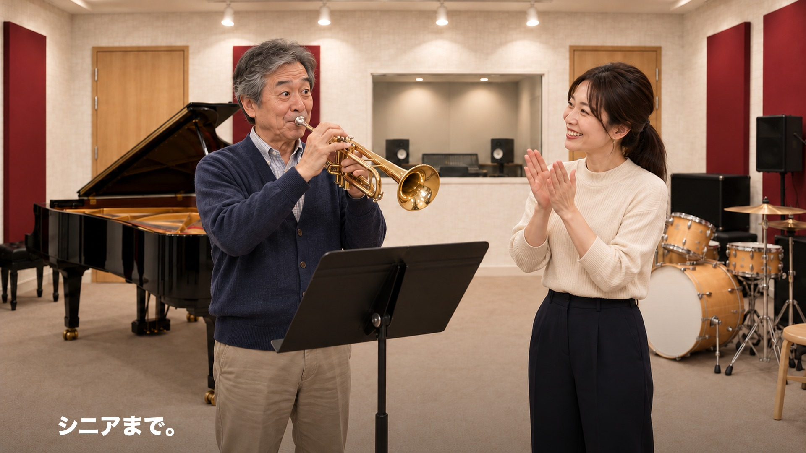 | 良さ：シニアまで・はじめてでも 場面：60代がトランペットで音が出て、講師が拍手 テロップ：シニアまで。 |
| C08 4秒 | 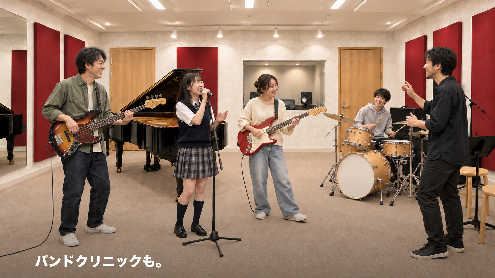 | 良さ：プロの指導のバンドクリニック 場面：高校生〜大人の混成バンドと講師が合奏 テロップ：バンドクリニックも。 |
| C09 4秒 | 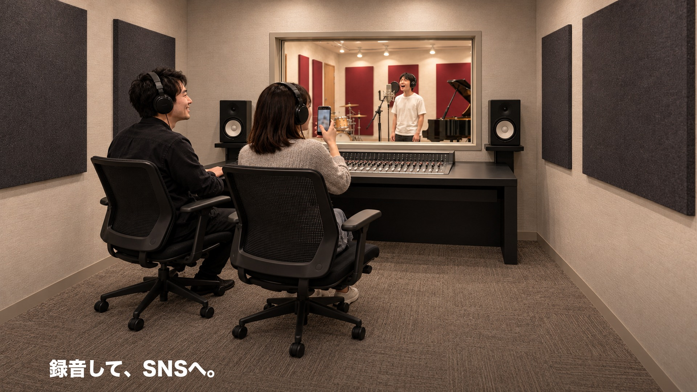 | 良さ：録音してSNSへ 場面：操作室で録音を聴き返して盛り上がり、スマホで撮る。窓の向こうで歌う人 テロップ：録音して、SNSへ。 |
| C10 3秒 | 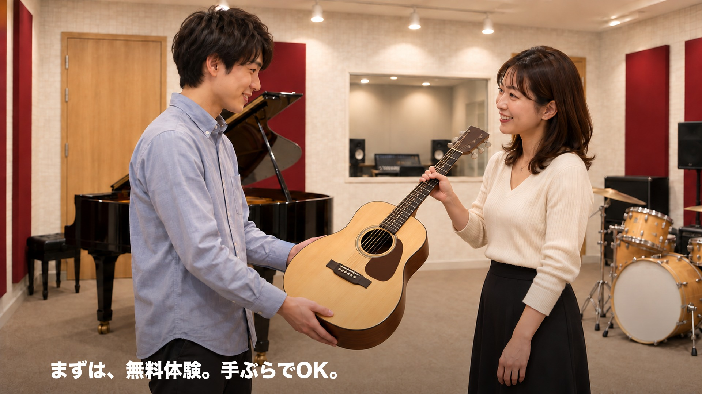 | 良さ：無料体験・手ぶら 場面：手ぶらで来た人が貸し出しのギターを受け取る テロップ：まずは、無料体験。手ぶらでOK。 ※仮のイメージ |
| C11 8秒 | 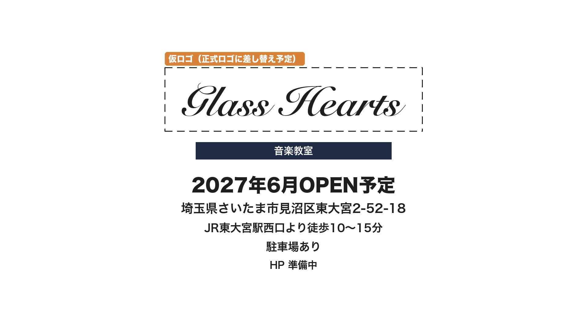 | 良さ：場所・OPEN 場面：エンドカード（仮ロゴ・音楽教室・OPEN・住所・アクセス・駐車場・HP準備中） テロップ：（エンドカード） ※仮のイメージ |